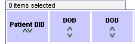

Sorting Records You can sort the results table by any of the columns that display up/down carets (^) in the headers. How to Sort a Column in a Report Table 1. To sort a column in ascending order, click the caret pointing up. 2. To sort a column in descending order, click the caret pointing down. 